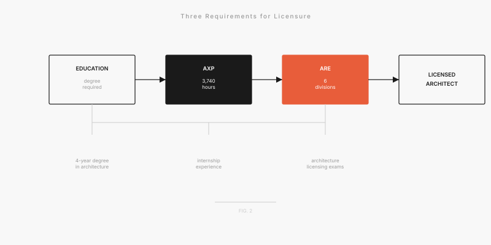
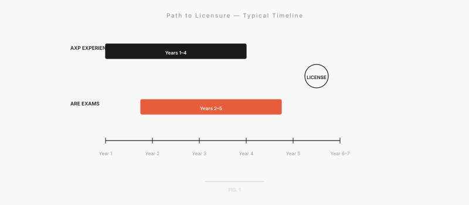

The Licensure Path: ARE, AXP, and Whether It Actually Matters
Everyone tells you to get licensed. Not everyone tells you what that actually involves, how long it takes, or whether it's the right move for every career path.
October 9, 2025
You're at a firm mixer and someone asks: "Are you going for your license?" The question assumes the obvious answer. Of course you are. It's the checklist. Graduate, job, hours, exams, stamp, done.
Except nobody explains what that actually means. How long it takes. Or the thing nobody wants to say: whether you actually need it for where you're going.
Let's fix that.
What Licensure Actually Means
Licensure isn't a test. It's a years-long process that has three parts: hours of experience (AXP), six separate exams (ARE), and state paperwork. You can't skip any of them. You can't do them out of order. You can't do them while also sleeping or having a social life. (People try. It doesn't work.)
licensure is a marathon that starts when you get your first job and doesn't finish until you're somewhere between 30 and 35. It's not something you do after you've made it. It's something that runs parallel to the actual work of trying to start your career.
Let's walk through what that looks like.

AXP: The Experience You're Already Getting (You Just Need to Document It)
AXP is "Architectural Experience Program." If you talk to someone licensed before 2023, they'll still call it IDP. Architecture's language evolves about as fast as code enforcement.
AXP is a requirement to log between 3,000 and 5,600 hours of work in defined categories before you can sit for the exams. The range depends on your degree and your state. Professional degree? Fewer hours. Non-professional degree? More hours.
The hours get sorted into six categories: Programming and Analysis, Project Planning and Design, Project Management and Coordination, Contracts and Documentation, Project Delivery and Administration, and Practice Management. You need minimums in each. You need to document everything because NCARB (National Council of Architectural Registration Boards. Yes, there's a whole board for this) is going to review your submissions and they don't accept "I think I did this."
Good news: almost everything you do in an office counts. You don't need special projects. You don't need to work on prestige buildings. The person doing drawing sets for residential additions is logging hours as legitimately as the person on a 500-person office tower.
The mistake everyone makes: not tracking from day one. You think you'll catch up later. You think you'll remember. You won't. The people who move through AXP effortlessly are the ones who log five minutes a week, consistently, in real time.
If you procrastinate until year three? You'll spend months reconstructing history and hoping you can justify what you did.
Start logging your AXP hours on day one of your first job, even if licensure feels five years away. Future you will send present you a thank-you card.
ARE: Six Exams That Test Whether You Know Enough to Not Wreck A Building
The ARE is six separate exams. PlanPrep, Programming and Analysis, Project Planning, Project Management, Project Delivery, Practice Management. The names are deliberately repetitive. The exams don't get easier because of it.
Real talk: the ARE is hard. Not because it's testing whether you're an expert. It's testing whether you know enough to not make a dangerous mistake. You don't need to memorize code. You need to know codes exist and why they matter. You don't need to understand every structural system. You need to understand enough to talk to a structural engineer and know when something looks wrong.
Most people spread them over 18-24 months. If you try all six at once (some people do), you'll fail at least one. If you try to cram all six simultaneously, you'll fail all six. Pass rates hover around 60-70%, which means plenty of smart architects don't pass on the first try.
What actually works: space them out reasonably. Find three or four people at your office also sitting for exams and study together weekly. Use practice exams until you're sick of them. Prep courses are worth the money if you'll actually show up to them. If you're just going to buy it and let it sit, don't.
You can retake failed exams, but retakes cost money and time, so study like you mean it. The people who move through smoothly are the ones who studied 8-10 weeks per exam and actually understood the material instead of just memorizing stuff they'd forget by question 15.
Does Getting Licensed Actually Matter?
Here's the honest answer: depends on what you want to do.
GET LICENSED if:
- You want to stamp drawings (yes, there's an actual stamp, very official)
- You want to own your own firm
- You want to be the person legally responsible for a project
- You're going international. Reciprocity is easier if you're already licensed
SKIP IT if:
- You're in computational design and don't care about stamping
- You want to be a world-class renderer and that's enough
- You're headed toward academia or research
- You're in urban design or strategy (where your thinking matters way more than your credentials)
- You're going to work at a tech company where nobody ever needs a stamp
- You want to do landscape architecture instead (different license, different whole thing)
getting licensed doesn't make you a better designer. It makes you legally authorized to practice independently in one state. It's bureaucratic legitimacy, not creative credibility. You can be an incredible architect without the letters. (You'll just be working for someone who has the letters.)
The word "Architect" is legally protected. You can't call yourself an architect unless you're licensed. But designing interesting buildings happens with or without a stamp. The person doing computational design at a forward-thinking firm is doing real architecture. They might not be licensed. They might never care about being licensed. And they might be doing better work than the person with the stamp.
A Realistic Timeline
The math looks like this:
- Years 1-3: Log AXP hours while working. You're not doing anything special. Just documenting what you're already doing.
- Years 3-4: You've logged enough hours. Start taking exams. Most people spread them across two years, sometimes three.
- Years 4-6: Still testing. Some people move faster, some slower. You're balancing work and studying.
- Years 6-7 (age 30-35): All six divisions passed. Submit your AXP documentation to your state. Pay the fees. A few months later, you have the letters.

Seven years from graduation to licensed architect is standard. Five years means you're moving fast. Eight or nine means you're human.
Real talk: licensure is a long commitment on top of an already demanding career in a profession that's not exactly gentle to junior people. You'll work long hours on projects and also somehow find time to study. Everyone else is sleeping eight hours a night. You're not.
Before you commit, ask: Do I actually need this? Or am I doing it because I'm supposed to?
If the answer is "I want to stamp and own a firm," go all in. Track obsessively. Study seriously. You'll get there.
If the answer is "I don't know, everyone just says I should," maybe figure out whether your actual goals require a stamp. The next seven years should go toward something you actually want. Not something that sounded important at graduation.
You're not broken without a license. You're not ahead because you have one. You're just on a different path through an already complicated profession.
Choose the path you actually want to walk.